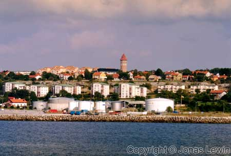
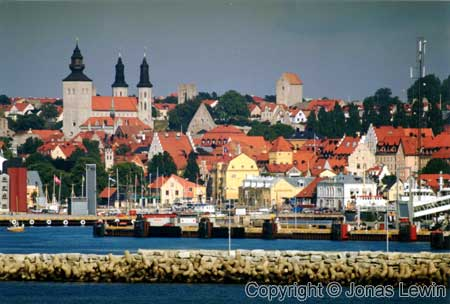
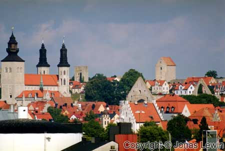
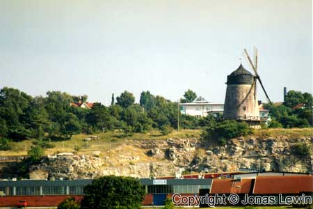

Gotland, Sweden, Visby, 2001-08
|     |
|
I got myself to Oskarshamn the 25th of August. The ferry leaves at 12:00, and
takes 4 hours to Visby. Visby is located on the west coast of Gotland. The city looks a little bit like Reykjavik at first look. The friendly city has much to offer when it comes to old Swedish culture. Many many of the buildings inside the wall are preserved well, and looks old style. I'm sure it would be nice to be in Visby week 32 when the Medieval Times Festival is ongoing in the city. Visby is for sure a nice city to walk around in, and I could spend some more time there. Walking around in Visby, is like traveling back in time, for someone like me. Watching the old buildings, seeing the old narrow streets, getting away from all the traffic. And still, this is Sweden. Lunch the next day was at "Restaurant Brinken". I would not recommend any one to go there, unless everything else is closed. When I was in Visby the day before, I saw a lot of pizzerias, so I think that this is what you should eat when you get here. It's even closer between them than it is in New York. So take my advice, if you go to Visby, and have a Pizza. Too bad that I couldn't find one that was open when I was hungry, as I was pressed for time. I was lucky, as the weather was pure sunshine, and warm weather the whole time I was in Visby. |